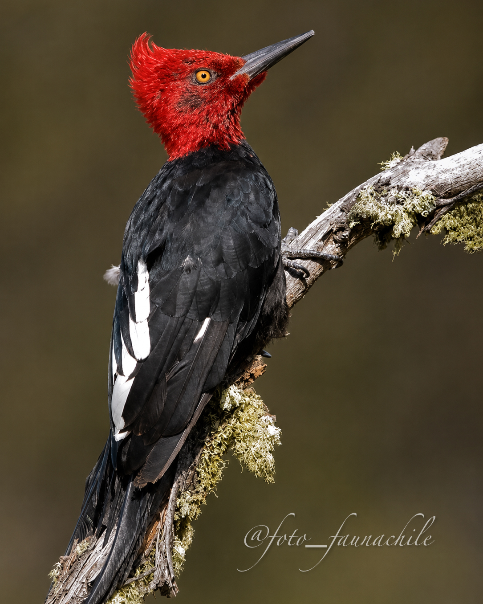

Un especialista del bosque
Busca insectos y larvas en la madera y utiliza árboles para excavar cavidades de nidificación.

BOSQUE AUSTRAL
Campephilus magellanicus
El pulso del bosque austral. Su presencia, sus llamados y su tamborileo forman parte del paisaje sonoro de los bosques patagónicos.
Descubre 3 datos de esta especie ↓CONOCE AL PROTAGONISTA
El Carpintero Negro es una de las aves más características de los bosques australes. Trepa por troncos y ramas utilizando su fuerte pico para buscar alimento y excavar cavidades. Su actividad ayuda a transformar el bosque, ya que las cavidades que crea también pueden ser utilizadas posteriormente por otras especies.
DESCUBRE LA ESPECIE
Busca insectos y larvas en la madera y utiliza árboles para excavar cavidades de nidificación.
Sus golpes sobre los troncos y sus llamadas son parte de los sonidos característicos del bosque austral.
La conservación de bosques nativos y árboles maduros es fundamental para su alimentación y reproducción.
SONIDOS DE LA PATAGONIA
Escucha sus llamados y el característico sonido que forma parte de la identidad del bosque austral.
AURA TEXTIL
Esta fotografía forma parte del origen visual de Patagonia Salvaje: fauna de la Patagonia transformada en una propuesta textil que invita a mirar con más atención las especies que inspiran cada diseño.
EXPERIENCIA QR
El producto te invita a conocer y descubrir más sobre cada especie.
← Volver a Los protagonistas